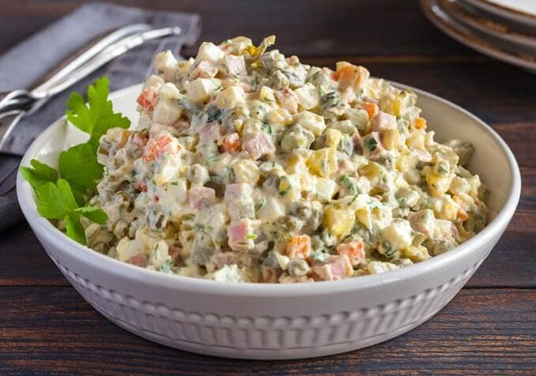

<center>
    <h2>RASOLS<h2>    
    

    <h3>Vai svētkos gatavosim rasolu vai rosolu?</h3><br>
    <h4> 
        Auksto ēdienu – salātus, kas gatavoti no vārītas vai ceptas gaļas, vārītiem dārzeņiem (piemēram, kartupeļiem, bietēm), 
        olām un skābētiem vai marinētiem gurķiem, pievienojot krējumu vai krējumu ar majonēzi un garšvielas, – sauc      
        par     rasolu. Šis ir vienīgais minētais variants latviešu valodas pareizrakstības vārdnīcās.
        Rasolu līdzīgo recepšu dēļ mēdz dēvēt arī par Olivjē salātiem, galvaspilsētas vai vienkārši gaļas salātie
    </h4>      
</center>
